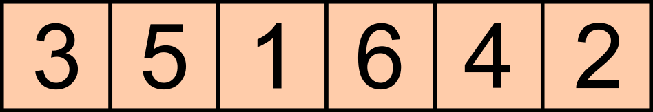
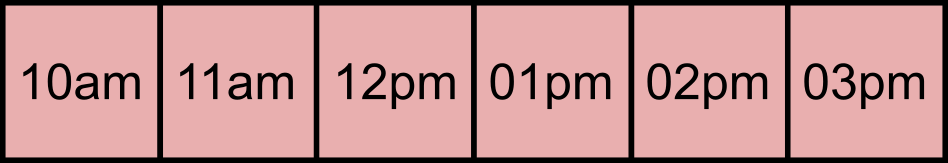

Medidas Repetidas
El tiempo en los modelos estadísticos
- El tiempo es una variable problemática en el análisis estadístico, sobre todo por la necesidad de postular el supuesto de independencia entre las observaciones.
- Situaciones en las que el tiempo es una variable fundamental:
- Dinámica poblacional
- Crecimiento de organismos,
- Sucesión de comunidades, etc.
- La información necesaria para la construcción de modelos en los que el tiempo interviene como una covariable o como variable explicativa puede obtenerse, según convenga, de observaciones realizadas independientemente sobre sujetos diferentes o sobre los mismos sujetos.
Casos familiares en ecología
\[ \begin{align*} n_{t+1} &= rn_t \\ n_{t+1} &= rn_t (1 - \alpha n_t) \\ \end{align*} \]
Esta última versión de crecimiento logístico se ve así arreglando un poco los términos \[ n_{t-1} = rn_t - r \alpha n_t^2 \]
Otra forma de incorporar densodependencia
\[ n_{t+1} = rn_t e^{-an_t} \]
- ¿se puede arreglar ésta de alguna forma conveniente?
Mediciones repetidas
El tiempo también puede involucrarse en un estudio cuando los sujetos o unidades experimentales son observados repetidamente (repeatead-measures o measurements) en el transcurso de la investigación.
Cada unidad experimental actúa conceptualmente como un bloque dentro del cual se realizan todas las observaciones prevista en una secuencia temporal.
Este arreglo de las mediciones es lo que lleva a denominarlas también como diseños dentro de sujetos (within-subjects).
…Aleatorización…
Un conjunto de tratamientos aleatorizados se puede ver así

¿Qué pasa en este caso?

Casos de medidas repetidas
Cada UE se observa en “a” diferentes condiciones de tratamiento y la misma variable de respuesta se mide en cada ocasión (un animal es expuesto a “A”, medida su respuesta y después expuesto a “B” y medida la respuesta respectiva.
Cada individuo es medido con diferentes instrumentos o técnicas, el interés puede radicar en contrastar el “rendimiento” de las técnicas o analizar “patrones de respuesta” de los individuos. Este tipo de estudios a veces es denominado “análisis de perfiles”.
Se mide algún aspecto del sujeto (v.gr. tamaño) en dos o más momentos diferentes.
- Algunos autores consideran que medidas repetidas se refiere sólo al último caso.
Definición del caso de medidas repetidas
Un estudio con medidas repetidas es aquel en el que las unidades experimentales (animales, personas, sitios, plantas, etc.) son observadas en varias ocasiones.
Cada UE recibe normalmente algún tratamiento asignado aleatoriamente, ya sea al inicio o bien repetidamente a lo largo de la investigación, y son entonces observados en ocasiones sucesivas para ver como se desarrolla el efecto del o los tratamientos.
Como en otros casos de diseños experimentales, los casos más simples son cuando se trata de arreglos balanceados y completos.
…¿medidas repetidas?…

Ventajas de los diseños con medidas repetidas
Se obtiene más información de cada sujeto comparada con la que normalmente se obtiene en los diseños convencionales.
El número de sujetos necesarios para el estudio, dentro de un nivel dado de potencia estadística, tiende a ser mucho menor.
Como las observaciones son hechas dentro de los sujetos, la variabilidad debida a las diferencias individuales entre los sujetos se elimina del término de error.
Cada sujeto actúa como su propio control, incrementando la potencia estadística del estudio.
Más ventajas…
Permiten estudiar efectos residuales o acarreados (“históricos”) de los tratamientos.
Permiten estudiar los cambios temporales de una variable de respuesta.
Desventajas
- El supuesto de independencia no se cumple adecuadamente, puesto que existe alguna correlación entre los resultados de los tratamientos que se debe, precisamente a realizar las observaciones repetidamente sobre los mismos individuos.
- Por ejemplo, un animal que tiende a mostrar valores altos de la respuesta con el tratamiento “A”, se comportará igual con el tratamiento “B” o, si los tratamientos son antagónicos, al contrario, pero en ambos casos la correlación será importante.
- El riesgo de acarreo de efectos en la secuencia de tratamientos, que como vimos puede ser de interés, pero también un efecto indeseable, ¡sobre todo si no se advierte!
Solución 1
Parcelas divididas. La solución más simple y que ha sido ampliamente usada es la de considerar el problema como un caso “aproximado” de parcelas divididas.
Si el tiempo es un factor de interés, se le considera como asignado a la parcela chica,
Subsiste el problema de que la distribución de sus niveles entre las unidades experimentales no puede hacerse en una forma aleatoria irrestricta, ya que necesariamente se tienen ordenados los periodos dentro de cada UE.
Un supuesto adicional
Las diferencias entre tratamientos tienen varianzas homogéneas. Es decir, si tomamos dos niveles del tratamiento, digamos l y m , y calculamos la diferencia entre los valores de la variable respuesta entre estos niveles, el valor resultante, \(Y_l-Y_m\) , debe tener la misma varianza poblacional que cualquier otra diferencia entre niveles.
Esto es equivalente a suponer que la correlación, \(\rho\), de la respuesta entre niveles, l y m ,del tratamiento es la misma para todas las posibles combinaciones pareadas de niveles. A esta condición se le denomina “esfericidad”
¿Cómo se expresa esto?
\[ \sigma_{y_l-y_m}^2 = \sigma_{y_l}^2 + \sigma_{y_m}^2 - 2cov(y_l, y_m) \]
- Que podemos arreglar así si incorporamos el supuesto de homogeneidad de varianzas llamamos a la covarianza \(\rho\):
\[ \sigma_{y_l-y_m}^2 = 2\sigma^2 + \rho\sigma^2= 2\sigma^2(1-\rho) \]
Un ejemplo
Se investiga el crecimiento de venados sujetos a t distintos tipos de manejo de hábitat. A cada animal se le mide el peso en k períodos sucesivos.
El modelo de parcela dividida correspondiente
\[ y_{ijkl} = \mu + T_i + A_{j(i)} + \delta_{m(ij)} + P_k + TP_{ik} + AP_{jk(i)} + \varepsilon_{l(ijk)} \]
- T: tratamientos (1= 1,…,t)
- A: animales (j=1,…,r)
- \(\delta\) error de restricción
- P: periodos (k=1,…,b)
- \(\varepsilon\) (l=1,…,c)
Qué pasa con los “accidentes” que pueden ocurrir en el tiempo
Podría incluirse un error de restricción para períodos, que conduciría a la imposibilidad de hacer una prueba válida para este factor, aunque sí para la interacción TP. Sin embargo, usualmente este error se ignora y se supone que los factores de confusión correspondientes tienen poca o nula importancia.
Otra solución
La técnica a emplear es el Análisis de la Varianza Multivariado (MANOVA).
Considera como única unidad experimental a los sujetos.
Cada sujeto se asocia con un vector de variables de respuesta en el que cada valor corresponde con la medición realizada en el periodo respectivo.
Un ejemplo sencillo
Se trata de un estudio con dos tratamientos T , cuatro períodos P y seis animales para cada tratamientos en un diseño completamente al azar.
El modelo matricial correspondiente es:
\[~~~~~Y~~~~~~=~~~~~~X~~~~~~~~~~~~~ M~~~~~+~~~~~~ \varepsilon \\ ~~~~~~~~~12×4~~~~~~~~~~12×2~~~~~~~~2×4~~~~~~~~~~12×4~~~~~ \]
- Para que este modelo pueda ser estimado es necesario que haya al menos \(t+p\) sujetos: 2+4 =6 en este caso.
Supuestos
El MANOVA supone que las matrices de varianzas y covarianzas de cada período dentro de sujetos, son homogéneas.
No se supone homogeneidad de varianzas para los diferentes periodos ni constancia de las covarianzas (esfericidad) entre cualquier pareja de periodos dentro de cada animal.
Por lo anterior es una buena solución para experimentos donde los períodos involucran cambios drásticos en los valores de las respuestas, como pueden ser los casos de crecimiento o efectos hormonales.
…y claro, la solución con modelos mixtos
- Como hemos visto, para estimar el “valor típico” de algo midiendo repetidamente podríamos intentar este modelo aproximado:
\[ y_{ij} = \beta + \varepsilon_{j(i)} \]
\(\beta\) es el “valor típico” en la población, pero como sabemos, en este caso habría dos componentes de varianza involucrados: variación entre sujetos y variación en las mediciones que realizamos en cada uno de ellos.
El modelo es más adecuadamente representado así:
\[ y_{ij}=\beta + \eta_i + \varepsilon_{j(i)} \]